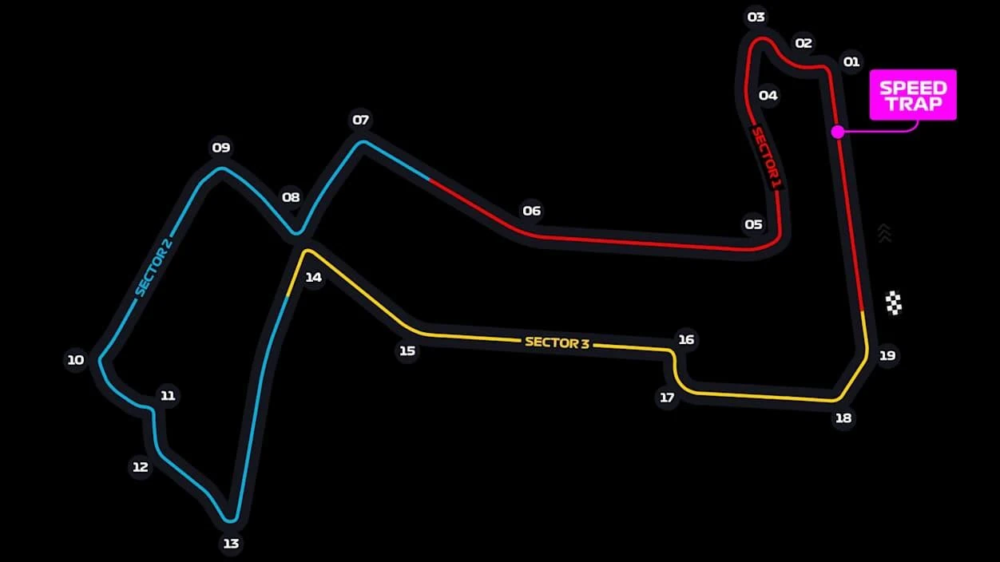

RACE OVERVIEW Proyecto integrador · Ciencia de DatosUTN FRM · 2026 · GRUPO 5K10-10
F1 Strategy PipelineVentana de boxes
LA PREGUNTA¿Se puede anticipar, con lo que se sabe al empezar cada vuelta, si un piloto de Fórmula 1 va a entrar a boxes y qué neumático va a montar?
El modelo detecta cuándo se abre la ventana de parada, pero no ve venir las paradas que provocan el safety car y la lluvia.
P1{{ T.pct_seco }}de las paradas en seco y sin safety car tuvo la alarma encendida en esa vuelta{{ T.seco_a }} de {{ T.seco_n }} paradas de 2025, una temporada que el modelo no vio
P2{{ T.pct_reactivas }}de las paradas con safety car o a neumáticos de lluvia tuvo la alarma encendida{{ T.reactivas_a }} de {{ T.reactivas_n }} paradas de 2025
P3{{ T.pct_episodios }}de las rachas de alarma terminan en una parada real, en la racha o hasta 3 vueltas después{{ T.episodios_ok }} de {{ T.episodios }} rachas · duran {{ T.episodio_mediana }} vueltas (mediana)
Cuando hay parada, el modelo también acierta el neumático en el {{ T.acc_comp }} de los casos (montar siempre HARD acierta el {{ T.acc_piso }}).
{{ T.carreras_validas }} carreras{{ T.vueltas_validas }} vueltas{{ T.paradas_reales }} paradas2023–2025 temporadasOpenF1 API pública2 random forest
S1 Los datos
S2 Lo que encontramos
S3 El modelo
PIT LANE Tu turno: explorá y probá
Vuelta de formación. Primero te guiamos por tres sectores, cada uno con un hallazgo. Después se abren los boxes: manejás vos los datos y el modelo, ya sabiendo qué mirar.
S1 THE DATA GARAGE Los datos
Solo 3 de cada 100 vueltas terminan en boxes, y las grandes tandas de paradas llegan con safety car o lluvia
{{ T.paradas_reales }} paradas en {{ T.vueltas_validas }} vueltas de {{ T.carreras_validas }} carreras ({{ T.pct_paradas }}). Cada fila es una carrera; cada círculo, una vuelta en la que paró al menos un piloto, y su área indica cuántos.
Vueltas con etiqueta
{{ T.vueltas_validas }}
Paradas en boxes
{{ T.paradas_reales }}
Vueltas que terminan en boxes
{{ T.pct_paradas }}
Carreras · 2023–2025
{{ T.carreras_validas }}
Qué mirar
La mayoría de los círculos son chicos y grises: paradas de uno o dos pilotos, planificadas, en seco. Los círculos grandes —diez o más autos que entran juntos— son ámbar (safety car en pista) o azules (cambio a neumáticos de lluvia). Esa diferencia es la que va a explicar dónde acierta y dónde falla el modelo.
Que las paradas sean tan pocas obliga a no medir con accuracy: un modelo que nunca dice «parar» acertaría el {{ T.test_nunca_acc }} de las vueltas de 2025 sin servir para nada.
Cómo lo sabemos Fuente, filtros, cantidades y columnas descartadas
Fuente y obtención
API pública OpenF1 (v1): vueltas, stints, paradas, clima, posiciones, intervalos y dirección de carrera. Un DAG de Apache Airflow (dags/f1_strategy_pipeline.py) guarda las respuestas tal como llegan en la capa Bronce y src/silver_pipeline.py las une sin mirar el futuro (uniones as-of a la última medición anterior a cada vuelta) en f1_silver_dataset.csv: {{ T.filas_silver }} filas × {{ T.cols_silver }} columnas, {{ T.carreras_silver }} carreras.
Las paradas y el neumático montado salen de emparejar cada parada con el stint siguiente (resolve_driver_pits, mismo código del pipeline). Origen en esta construcción: {{ T.origen_pits }}.
Fecha y unidad
Descarga del 9 de septiembre de 2026. Carreras desde el {{ T.fecha_desde }} hasta el {{ T.fecha_hasta }} (temporadas 2023, 2024 y 2025 completas).
Una fila es una vuelta de un piloto en una carrera. Clave: (session_key, driver_number, lap_number), sin duplicados. Dos objetivos: pit_stop (¿para en esta vuelta?) y, si para, el neumático que monta (SOFT, MEDIUM, HARD o LLUVIA = intermedio + mojado).
Filtros, en orden
Paso
Qué se hace
Vueltas
Paradas
Carreras
Por qué
0
Capa Silver del pipeline
{{ T.filas_silver }}
—
{{ T.carreras_silver }}
Todas las vueltas descargadas.
1
Se descartan las vueltas sin dato de paradas ({{ T.vueltas_sin_etiqueta }} vueltas de {{ T.carreras_sin_etiqueta }} carreras de 2023)
{{ T.vueltas_validas }}
{{ T.paradas_reales }}
{{ T.carreras_validas }}
OpenF1 no publica paradas de esas carreras: tratarlas como «no paró» sería inventar la respuesta (devolución de la Entrega 2).
2
Corrección de Bélgica 2025 ({{ T.pilotos_corregidos }} pilotos)
{{ T.vueltas_validas }}
{{ T.paradas_reales }}
{{ T.carreras_validas }}
OpenF1 da un stint de una vuelta y otro compuesto desde la vuelta 2 sin parada entre ambos, algo imposible. La regla mira solo la historia de stints y paradas.
3
Se quedan las vueltas con una vuelta previa del piloto con neumático y edad conocidos (−{{ T.sin_historia }} vueltas, −{{ T.sin_historia_paradas }} paradas)
{{ T.poblacion }}
{{ T.poblacion_paradas }}
{{ T.carreras_validas }}
Todo lo que usa el modelo sale de la vuelta anterior; la primera vuelta de cada piloto no tiene historia.
4a
Entrenamiento y validación: 2023–2024
{{ T.train_v }}
{{ T.train_p }}
{{ T.train_c }}
Se entrena con temporadas pasadas y se evalúa en una nueva, como se usaría en la realidad.
4b
Test: 2025, mirado una sola vez
{{ T.test_v }}
{{ T.test_p }}
{{ T.test_c }}
Neumático montado en las {{ T.poblacion_paradas }} paradas: SOFT {{ T.clases.SOFT }} ({{ T.clases_pct.SOFT }}), MEDIUM {{ T.clases.MEDIUM }} ({{ T.clases_pct.MEDIUM }}), HARD {{ T.clases.HARD }} ({{ T.clases_pct.HARD }}), LLUVIA {{ T.clases.LLUVIA }} ({{ T.clases_pct.LLUVIA }}).
Columnas descartadas por fuga de información
new_compound: es la respuesta.
current_compound, tyre_age y stint_number de la vuelta que se decide: en la vuelta de la parada ya muestran a veces el neumático nuevo (321 paradas con edad 0 en la Entrega 2). Se usan los de la vuelta anterior.
pit_duration, lane_duration, stop_duration, lap_duration y los tiempos de sector: se conocen al terminar la vuelta o la parada.
session_max_lap_observed: es el largo final de la carrera; el momento de carrera se mide con el número de vuelta.
Por la devolución de la Entrega 2 quedan fuera del modelo safety_car_active, yellow_flag_*, i1_speed, st_speed, interval* y gap_to_leader. El safety car se usa solo para leer los errores.
Cómo se construyó el gráfico
Datos: las {{ T.paradas_reales }} paradas, agrupadas por carrera y vuelta (una marca por vuelta con paradas). Marca: círculo; posición horizontal = número de vuelta; fila = carrera, en orden de fecha; área = pilotos que paran en esa vuelta; color = contexto (si alguna de esas paradas fue con safety car, ámbar; si no y alguien montó neumáticos de lluvia, azul). La barra gris de cada fila va de la vuelta 1 a la última registrada.
S2 PERFORMANCE ANALYSIS Lo que encontramos
Con safety car los equipos cambian de plan: en seco, el HARD baja del {{ T.h4_sin_hard }} al {{ T.h4_con_hard }} de las paradas
Neumático montado en las paradas a compuestos de seco, según haya o no safety car en pista ({{ T.h4_n_con }} paradas con safety car y {{ T.h4_n_sin }} sin).
Qué mirar
La distancia entre el círculo y el rombo de cada fila. Con safety car la parada cuesta menos tiempo y se aprovecha para poner un neumático para menos vueltas: crece el SOFT ({{ T.h4_sin_soft }} → {{ T.h4_con_soft }}) y el MEDIUM ({{ T.h4_sin_med }} → {{ T.h4_con_med }}), y cae el HARD. Son paradas que responden a algo que pasa en la carrera, no a un plan escrito antes de largar.
Es una asociación, no una causa. Y como el safety car quedó fuera del modelo (devolución de la Entrega 2), es justamente la situación en la que el modelo no tiene con qué anticipar.
Cómo lo sabemos Hipótesis, números, construcción del gráfico y transformaciones
Cada hipótesis se decidió con un número contra los cortes de la cátedra. Separación estandarizada: rojo < 0,2 · amarillo 0,2–0,8 · verde > 0,8. Brecha de proporciones: rojo < 0,05 · amarillo 0,05–0,15 · verde > 0,15.
Se sostuvo · verde
H4 · Con safety car se monta un compuesto más blando
Brecha del HARD entre paradas sin y con safety car: {{ T.h4_brecha_todas }} sobre todas las paradas ({{ T.h4_hard_sin_todas }} contra {{ T.h4_hard_con_todas }}). Como con safety car también hay más lluvia ({{ T.h4_lluvia_con }} de las paradas monta intermedios o mojado, contra {{ T.h4_lluvia_sin }} sin safety car), en la Entrega 3 se repitió solo con paradas a seco: brecha {{ T.h4_brecha }}, sigue verde. En la Entrega 2 la brecha también siguió verde quitando las últimas 15 vueltas (0,258).
Las {{ T.h4_sc_total }} paradas con safety car vienen de {{ T.h4_sc_carreras }} carreras y muchas son simultáneas: no son decisiones independientes.
No se sostuvo · rojo
H2 · Se para más desde posiciones retrasadas
Separación estandarizada de la posición entre vueltas con y sin parada: {{ T.h2_sep }}. Las distribuciones se superponen casi por completo y, si algo, los que paran vienen un poco más adelante: posición media {{ T.h2_media_para }} contra {{ T.h2_media_sigue }}.
La posición quedó en el modelo como variable a prueba; en la ablación, sacarla no cambia el resultado más allá del ruido.
La edad del neumático marca la ventana, no la vuelta (H1 corregida)
Las vueltas con parada empiezan con neumáticos más gastados —mediana {{ T.h1_med_para }} vueltas contra {{ T.h1_med_sigue }}; rango intercuartil {{ T.h1_iqr_para }} contra {{ T.h1_iqr_sigue }}—, pero las dos distribuciones se superponen mucho (separación 0,409, amarillo, en la Entrega 2). Es el histograma que pidió el docente en lugar del boxplot, con la edad al empezar la vuelta y cada grupo normalizado por separado.
Construcción del gráfico principal
Datos: las {{ T.paradas_reales }} paradas; se excluyen las que montan intermedio o mojado y quedan {{ T.h4_n_con }} con safety car y {{ T.h4_n_sin }} sin.
Transformación: para cada situación, el porcentaje de paradas que monta cada compuesto (tabla cruzada normalizada por fila, así cada grupo suma 100 %).
Marcas y escalas: un punto por compuesto y situación sobre un eje común de 0 a 60 %; la línea gris une los dos valores de cada compuesto para leer la diferencia. Color y forma distinguen la situación.
Safety car:safety_car_active sale de los mensajes de dirección de carrera anteriores al inicio de la vuelta (unión as-of del pipeline).
S3 INTELLIGENCE LAB El modelo
El modelo anticipa 2 de cada 3 paradas en seco, pero casi ninguna de las que provocan el safety car o la lluvia
Paradas reales de 2025 con la alarma encendida en esa misma vuelta (puntaje del modelo ≥ {{ T.umbral }}), según el contexto de la parada.
Qué mirar
Las tres barras usan el mismo modelo, el mismo umbral y la misma temporada. Cuando la parada es parte del plan —un neumático que se gasta— el modelo la ve venir: la alarma se prende varias vueltas antes y se apaga al parar. Cuando la parada es una reacción a algo que pasa en la pista, llega sin aviso: con safety car anticipa {{ T.sc_a }} de {{ T.sc_n }} y a neumáticos de lluvia {{ T.ll_a }} de {{ T.ll_n }}.
El precio de vigilar la ventana son las falsas alarmas: de las {{ T.test_alarmas }} vueltas con alarma en 2025, solo el {{ T.test_prec }} es una parada en esa vuelta exacta. Sirve como aviso de «se abrió la ventana», no como orden de «entrá ahora».
ENTRADALa vuelta que empiezapiloto, carrera, número de vuelta, circuito y equipo
HISTORIA CAUSAL18 variablessolo de vueltas anteriores: neumático, paradas, pelotón y clima
BOSQUE 2 · 150 ÁRBOLESNeumáticoprobabilidad de SOFT, MEDIUM, HARD o LLUVIA
{{ T.test_f1 }}
F1 de la clase «para» en 2025 · «siempre parar» da {{ T.test_siempre }}
{{ T.comp_f1 }}
F1 macro del neumático en las paradas reales · «siempre HARD» da {{ T.comp_piso_f1 }}
{{ T.sis_pct }}
de las paradas de 2025 con las dos decisiones bien: parar en esa vuelta y el neumático ({{ T.sis_ambas }} de {{ T.sis_paradas }})
Cómo lo sabemos Correcciones de la Entrega 3, métrica, piso, validación, comparación, ajuste, test, errores y variables
Qué corregimos desde la Entrega 3
El modelo es el mismo que se eligió en la Entrega 3 (dos random forest, umbral {{ T.umbral }}). Lo que cambió es cómo se leen sus errores, que es lo que pidió la devolución:
Lo que se marcó
Qué hicimos
Curva con recall en X, precisión en Y y los umbrales adentro
Curva precisión–recall fuera de pedazo, con cada umbral rotulado (más abajo, en «Ajuste»).
Bajar el umbral para mejorar el recall y ver cuántas paradas se recuperan
Regla nueva, fijada antes de mirar 2025: máximo F2 fuera de pedazo (premia el recall) entre umbrales ≤ 0,475. {% if T.f2.coincide %}Elige {{ T.f2.umbral }}, el mismo umbral.{% else %}En este entorno (el de la v6) elige {{ T.f2.umbral }} (F2 {{ T.f2.f2_nuevo }} contra {{ T.f2.f2_base }} de {{ T.umbral }}); la corrida guardada de la v7, con scikit-learn 1.9.1, elegía 0,475. La curva es tan plana que la versión de la librería cambia el máximo. La app mantiene {{ T.umbral }}, el umbral con el que se evaluó el test, y deja probar otros con el control de umbral de «Explorá».{% endif %} En la tabla de 2025 de abajo: con 0,40 se anticipan {{ T.corr.extra_vp }} paradas más a cambio de {{ T.corr.extra_fp }} falsas alarmas más.
Rehacer las matrices de confusión
Conteos y normalizaciones por fila y por columna (tabla de test y matriz del neumático).
Qué tan lejos están los falsos positivos de la parada real; gráfico de las falsas alarmas
Gráfico de falsas alarmas por distancia a la próxima parada: el {{ T.corr.cercanas_pct }} llega hasta 10 vueltas antes (mediana {{ T.corr.fp_mediana }} vueltas).
Tolerancia de 1 a 3 vueltas
Paradas con alarma en esa vuelta o en las k anteriores: {% for c in T.corr.cobertura %}k = {{ c.k }}: {{ c.pct }}{% if not loop.last %} · {% endif %}{% endfor %}. Lo que se escapa no se escapa por poco.
Falsos positivos entendibles y especiales; qué es fácil y qué es difícil
Es el eje de esta sección: el gráfico principal separa paradas planificadas (fáciles) de reactivas (difíciles); abajo, el perfil de las omitidas, la racha de {{ T.ejemplo.piloto }} y Bélgica 2025.
Importancia del random forest sin permutación: qué variables usa e ignora
Importancia por impureza (MDI) de cada bosque al lado de la de permutación, al final de esta sección.
Qué predice y con qué
Dos pasos en cada vuelta: (1) ¿para en esta vuelta? y, si la respuesta es sí, (2) ¿qué neumático monta? Ambos son un random forest (150 árboles, profundidad 12, hoja mínima 10, class_weight="balanced_subsample", semilla 42) dentro de un Pipeline cuyo primer paso, HistoriaCausal, arma 18 variables leyendo solo vueltas anteriores de la misma carrera:
Prueba de fuga (Entrega 3): para 300 vueltas al azar se borró del registro todo lo ocurrido desde esa vuelta en adelante y ninguna variable cambió (0 de 300).
Métrica elegida
Parada: F1 de la clase «para». Solo el {{ T.pct_paradas }} de las vueltas tiene parada; combina precisión (no parar de más) y recall (no perderse paradas). Neumático: F1 macro, para que SOFT ({{ T.clases_pct.SOFT }}) y LLUVIA ({{ T.clases_pct.LLUVIA }}) pesen lo mismo que HARD ({{ T.clases_pct.HARD }}).
Piso de comparación
Con la misma validación: «siempre parar» da F1 {{ T.piso_siempre_cv }} («nunca parar» da 0); para el neumático, «siempre HARD» da {{ T.piso_hard_cv }} y «al azar con las proporciones de cada clase», {{ T.piso_azar_cv }}.
Validación
2023–2024 se reparte en 4 pedazos de 10 carreras enteras, estratificando las carreras por «tuvo paradas a lluvia» para que cada pedazo tenga una de las 4 carreras con lluvia. Una carrera nunca queda de los dos lados: sus vueltas se parecen entre sí. Si se repartiera al azar por filas, el F1 subiría a {{ T.azar_pit }} (parada) y {{ T.azar_comp }} (neumático): ese salto es fuga, no mejor modelo. 2025 se consultó una sola vez al final, sin retocar nada. Aclaración honesta: versiones anteriores del grupo ya habían mirado 2025, así que no es un test virgen a nivel proyecto.
Comparación de modelos (media ± desvío en los 4 pedazos)
Parada · F1 de la clase «para»
Modelo
Validación (media ± desvío)
Entrenamiento
{% for f in T.familias.pit %}
{{ f.modelo }}
{{ f.media }} ± {{ f.desvio }}
{{ f.train }}
{% endfor %}
Neumático · F1 macro
Modelo
Validación (media ± desvío)
Entrenamiento
{% for f in T.familias.comp %}
{{ f.modelo }}
{{ f.media }} ± {{ f.desvio }}
{{ f.train }}
{% endfor %}
Regla de la cátedra: el modelo complejo se queda solo si su ventaja supera el desvío. Con las mejores configuraciones de cada uno y 3 repeticiones de los pedazos ({{ T.par_folds }} pedazos), el bosque le gana a la logística ajustada por {{ T.par_pit }} en parada ({{ T.par_pit_folds }} de {{ T.par_folds }} pedazos) y por {{ T.par_comp }} en neumático ({{ T.par_comp_folds }} de {{ T.par_folds }}).
Ajuste del modelo elegido
Grilla de profundidad (8, 12, 16) × hoja mínima (10, 25, 60). Gana profundidad 12 y hoja 10 en los dos pasos: F1 de validación {{ T.cv_pit }} ± {{ T.cv_pit_sd }} en parada y {{ T.cv_comp }} ± {{ T.cv_comp_sd }} en neumático. El bosque memoriza parte del entrenamiento (F1 de entrenamiento {{ T.cv_pit_tr }} y {{ T.cv_comp_tr }}); por eso se informa siempre la validación. Sin pesos de clase el bosque de parada da {{ T.rf_sin_pesos }}: nunca predice parada. La logística ajustada llega a {{ T.log_pit }} (C = {{ T.log_pit_c }}) y {{ T.log_comp }} (C = {{ T.log_comp_c }}).
Umbral. El puntaje del bosque no es una probabilidad calibrada. Con las predicciones fuera de pedazo de 2023–2024 se elige el umbral de máximo F1 (ante empate, el más alto): {{ T.umbral }}, con F1 {{ T.u_f1 }}, precisión {{ T.u_prec }} y recall {{ T.u_rec }}. La curva es casi plana: con 0,55 el F1 es {{ T.u055_f1 }}, con más precisión ({{ T.u055_prec }}) y menos recall ({{ T.u055_rec }}). {% if T.f2.coincide %}La regla F2 de la corrección elige el mismo umbral.{% else %}La regla F2 de la corrección elige {{ T.f2.umbral }} en este entorno (ver «Qué corregimos»).{% endif %}
Cada punto es un umbral (rótulo). Bajar el umbral mueve el punto a la derecha (más paradas anticipadas) y hacia abajo (más falsas alarmas por cada acierto). La línea punteada es el piso: la precisión de «siempre parar», igual a la proporción de vueltas con parada en 2023–2024 ({{ T.prev_train }}).
Umbral (2025, descriptivo)
Paradas con alarma
Sin alarma
Falsas alarmas
Recall
Precisión
{% for f in T.corr.umbrales %}
{{ f.u }}{% if f.base %} · elegido{% endif %}
{{ f.vp }}
{{ f.fn }}
{{ f.fp }}
{{ f.rec }}
{{ f.prec }}
{% endfor %}
Resultado en test (2025)
Parada
Modelo
Siempre parar
F1 clase «para»
{{ T.test_f1 }}
{{ T.test_siempre }}
Precisión
{{ T.test_prec }}
{{ T.test_siempre_prec }}
Recall
{{ T.test_rec }}
100 %
Accuracy
{{ T.test_acc }}
«nunca parar»: {{ T.test_nunca_acc }}
Neumático
Precisión
Recall
F1
Paradas
{% for c in ['SOFT','MEDIUM','HARD','LLUVIA'] %}
{{ c }}
{{ T.por_clase[c].p }}
{{ T.por_clase[c].r }}
{{ T.por_clase[c].f }}
{{ T.por_clase[c].n }}
{% endfor %}
Matriz de la parada: {{ T.test_vp }} paradas con alarma, {{ T.test_fn }} sin alarma y {{ T.test_fp }} falsas alarmas. Sistema completo: {{ T.sis_ambas }} de {{ T.sis_paradas }} paradas con parada y neumático correctos ({{ T.sis_pct }}); entre las paradas detectadas el neumático es correcto en el {{ T.sis_comp_det }} (con «siempre HARD» serían {{ T.sis_hard }}).
Análisis de errores
Las falsas alarmas no son al azar. El {{ T.fp_13_pct }} llega 1 a 3 vueltas antes de una parada real y el {{ T.fp_410_pct }}, 4 a 10 vueltas antes. El {{ T.fp_sin_pct }} restante no tiene parada en las 10 vueltas siguientes; de esas, en el {{ T.fp_no_vuelve }} el piloto ya no vuelve a parar (stints finales largos). Ejemplo: {{ T.ejemplo.piloto }} en {{ T.ejemplo.carrera }} 2025, con la alarma prendida desde la vuelta {{ T.ejemplo.vuelta }} y la parada {{ T.ejemplo.faltan|int }} vueltas después.
Paradas de 2025
Sin alarma (no anticipadas)
Con alarma (anticipadas)
Cantidad
{{ T.perfil.FN.paradas }}
{{ T.perfil.VP.paradas }}
Con safety car
{{ T.perfil.FN.pct_safety_car }}
{{ T.perfil.VP.pct_safety_car }}
Montan neumático de lluvia
{{ T.perfil.FN.pct_monta_lluvia }}
{{ T.perfil.VP.pct_monta_lluvia }}
Con neumático de menos de 8 vueltas
{{ T.perfil.FN.pct_neumatico_menor_8 }}
{{ T.perfil.VP.pct_neumatico_menor_8 }}
En las últimas 10 vueltas
{{ T.perfil.FN.pct_ultimas_10_vueltas }}
{{ T.perfil.VP.pct_ultimas_10_vueltas }}
Edad mediana del neumático
{{ T.perfil.FN.edad_mediana }} vueltas
{{ T.perfil.VP.edad_mediana }} vueltas
Lo que se escapa no se escapa por una vuelta: con alarma en la vuelta exacta hay {{ T.alarma_exacta }} de las paradas y con alarma en esa vuelta o en las 3 anteriores, {{ T.alarma_ventana }}.
Neumático. Las confusiones son entre compuestos vecinos (MEDIUM→SOFT {{ T.comp_errores[0].paradas }}, HARD→MEDIUM {{ T.comp_errores[1].paradas }}). Acierta más cuando se viene de SOFT ({{ T.comp_entrada.SOFT }}) que de HARD ({{ T.comp_entrada.HARD }}). El caso extremo es Bélgica 2025: {{ T.belgica_ok }} de {{ T.belgica_n }}. Todo el pelotón larga con intermedios y pasa a seco: el modelo ve que en la vuelta anterior todos estaban en intermedios y responde LLUVIA. No tiene una señal de que la pista se está secando.
Qué variables usa
Importancia por permutación en los pedazos de validación (cuánto cae el F1 al desordenar cada variable). Con permutación (izquierda parada, derecha neumático): para parar pesan la edad del neumático, las paradas hechas, si ya usó HARD y el compuesto actual; para el neumático, el momento de carrera y qué lleva el pelotón. Si dos variables cuentan lo mismo, la importancia se reparte; importancia no es causa.
Sin permutación (MDI): cuánto reduce cada variable la impureza en los árboles del bosque final. Para parar encabezan {{ T.corr.mdi_pit|join(", ") }}; para el neumático, {{ T.corr.mdi_comp|join(", ") }}. MDI se mide sobre el entrenamiento y favorece variables con muchos valores posibles (temperaturas, circuito): por eso el clima aparece alto acá y cerca de cero en la permutación, que se mide en carreras que el modelo no vio. Que una variable tenga MDI baja no prueba que el bosque la ignore, y que la tenga alta no prueba que ayude a generalizar.
PIT
PIT LANE OPENBoxes abiertos. Tu turno.
Ya sabés qué mirar. Ahora revisá cada carrera vuelta a vuelta y armá tus propios escenarios.

MARINA BAY · SINGAPUR · 1 DE LOS 24 CIRCUITOS DEL DATASET
PIT RACE CONTROL Explorá
Todas las paradas, carrera por carrera
Cada vuelta tiene la predicción de un modelo que no vio esa carrera: en 2025, el modelo final; en 2023–2024, el de la validación cruzada que dejó afuera esa carrera.
Temporada
Panorama · paradas reales por carrera
Cian: el modelo tenía la alarma encendida en la vuelta de la parada. Hacé clic en una carrera para abrirla.
Carrera
Cada celda es una vuelta de un piloto. Gris: sin alarma. Cian: alarma encendida, más claro cuanto mayor el puntaje. Los círculos son las paradas reales, con el color del neumático que se montó. Pasá el mouse para ver el detalle o hacé clic en una celda.
Lo que pasó y lo que dijo el modelo
Neumático que propondría si para
Lo que sabía el modelo al empezar la vuelta
Puntaje vuelta a vuelta
Línea: puntaje de parada del piloto; trazos: umbral; franjas ámbar: vueltas con safety car; círculos: paradas reales.
Elegí un piloto o hacé clic en una vuelta del mapa para ver su ficha.
SIM STRATEGY SIMULATOR Probá el modelo
Armá una situación de carrera y mirá qué haría el modelo
El cálculo lo hacen en tu navegador los mismos dos random forest de la Entrega 3: cada árbol exportado tal cual, sin aproximaciones. Solo se aceptan valores dentro de lo que el modelo vio al entrenar (2023–2024).